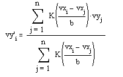
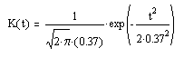

ksmooth(vx, vy, b) Returns a vector
of local weighted averages of the elements in vy using
a Gaussian kernel of bandwidth b, that is, smoothed
elements of vy are given by:

where

Arguments:
vx is a vector
of real numbers with elements in ascending order.
vy is a vector
of real numbers the same length as vx.
b is the bandwidth of
the smoothing window.
Notes:
This function is most useful when your data lies
along a band of relatively constant width.
Bandwidth is usually set to a few times the spacing
between data points on the x-axis, depending on
the desired degree of smoothing.
Some types of data are better smoothed with one type
of algorithm over another. You may wish to compare this method with Median smoothing or Localized
Least-squares smoothing. The loess polynomial
regression technique is also an effective smoother.